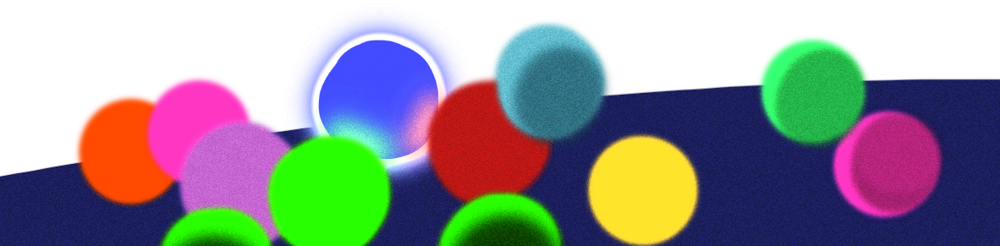

×

You discovered a Destroyer!
Destroyer is a formidable wanderer known for its explosive nature. Handle with extreme caution!
Wanderers are curious by nature, but they're also quite sensitive when you interact with them:
Try interacting with wanderers using your cursor. Enjoy the moment, throw them around but remember, holding on for too long makes them anxious, and anxiety is not healthy for these little creatures. A brief touch is all it takes to keep them happy.
If a wanderer starts to look uneasy, it's time to let go. Keeping an eye on their reactions will help you understand how long you can safely interact before they feel overwhelmed.
Wanderers are not the most social creatures out there, but they can still feel lonely... Here's how you can add more friends to their group:
Introduce new wanderers slowly to the environment by pressing the button on the upper-left corner of your screen!. Each addition affects the group’s dynamics, so do it carefully to avoid causing stress.
Watch how new and old wanderers interact. Maintaining harmony within the group is key to a thriving environment.
Among your wanderers, some are rarer than others. To discover these rare gems, you can use the inspection tool:
Keep an eye out for unique patterns and behaviors! Rare wanderers are not only a thrilling find but also is hard to find. Try to identify rare wanderers by their unique behavior, such as the way they move, interact with other wanderers, or many other distinctive behaviors, you just have to keep an eye on them!
If you're suspicious that a wanderer might be a rare species, just drag and drop that wanderer into the inspection zone above. This special area helps you determine whether you’ve encountered a common or rare type!
Embark on this delightful little adventure! Explore, discover, and connect with these tiny Wanderers. Do not forget to grab your rare wanderer cards if you catch them! And lastly, Have fun! And let the wonders of Wanderers fill your adventure with joy!
Inspect